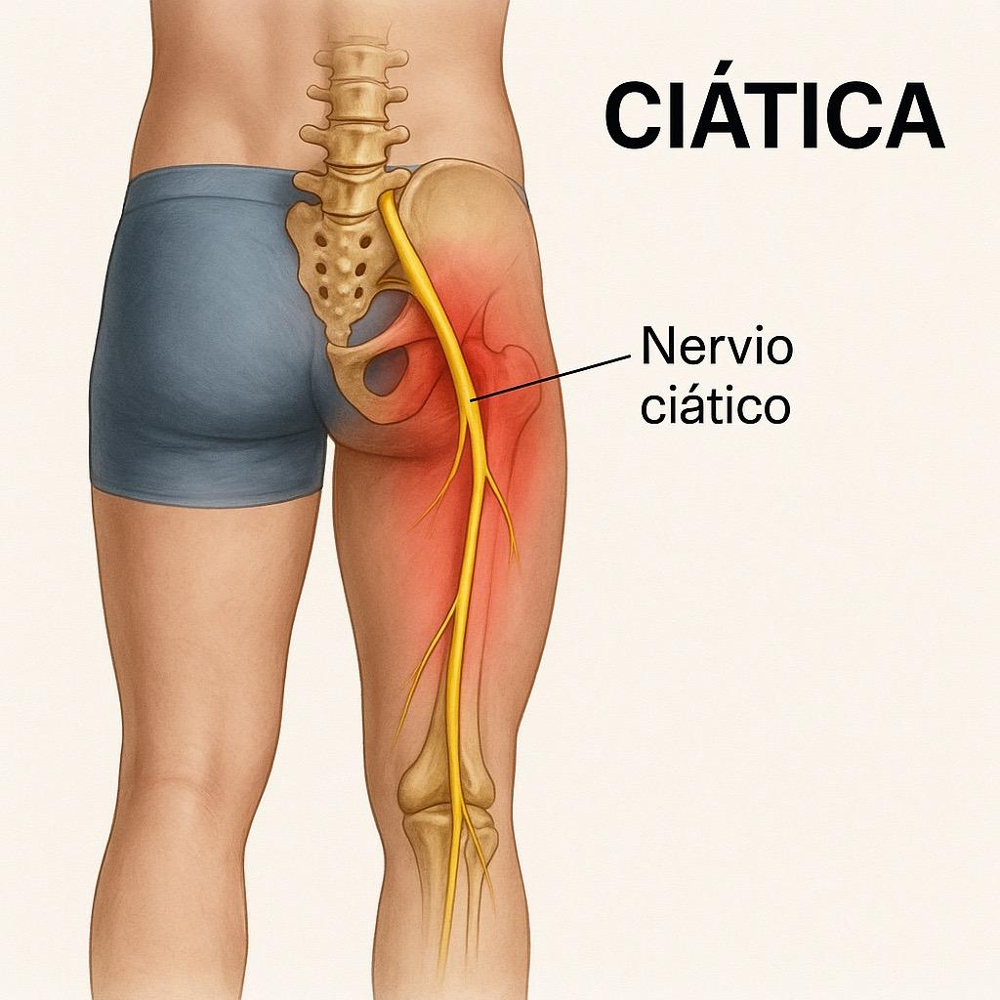
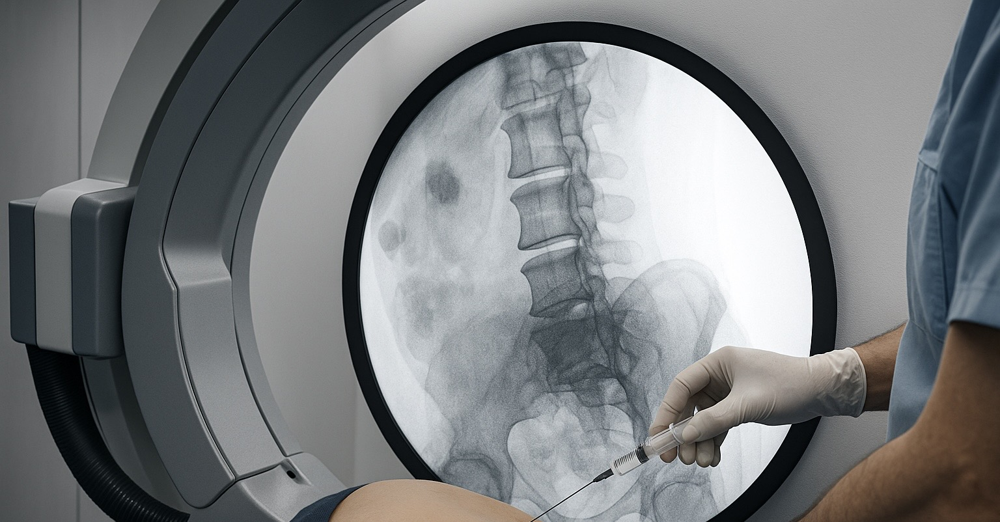

Lumbalgia y Ciática
La lumbalgia es dolor en la parte baja de la espalda. Cuando ese dolor se irradia hacia glúteo o piernas debido a irritación del nervio ciático, se conoce como ciática.

¿Qué es la lumbalgia?
Es dolor localizado en la región baja de la espalda. Puede ser aguda (menos de 3 meses) o crónica cuando persiste más tiempo.
¿Qué es la ciática?
Es dolor que baja desde la columna lumbar hasta una pierna siguiendo el trayecto del nervio ciático. Se acompaña de ardor, corriente, hormigueo o debilidad.

Trayecto del nervio ciático
Estadísticas
- 8 de cada 10 personas tendrán lumbalgia alguna vez.
- Entre 2%–5% sufren ciática cada año.
- Es una de las principales causas de incapacidad laboral.
Síntomas de lumbalgia
- Dolor en la parte baja de la espalda.
- Rigidez para agacharse o levantarse.
- Dolor que aumenta al cargar peso o estar sentado mucho tiempo.
Síntomas de ciática
- Dolor que baja a glúteo, muslo y pierna.
- Sensación de corriente, quemazón o adormecimiento.
- Debilidad en la pierna.
Acuda a urgencias si presenta incontinencia, pérdida de fuerza o dolor que impide caminar.
Causas frecuentes
- Hernia de disco lumbar
- Desgaste discal o articular
- Estenosis lumbar
- Contracturas musculares
- Espondilolistesis
- Traumas o movimientos repetitivos

Tratamientos médicos y rehabilitación
Medicamentos
- Antiinflamatorios y analgésicos.
- Relajantes musculares.
- Medicamentos para dolor neuropático.
Rehabilitación
- Fisioterapia para movilidad y fortalecimiento.
- Calor, electroterapia, ultrasonido.
- Ejercicios para estabilizar la columna.
- Educación postural.
Procedimientos intervencionistas
Indicado cuando el dolor no mejora o es incapacitante.
- Bloqueos facetarios lumbares
- Epidurales transforaminales o interlaminares
- Bloqueo de raíces nerviosas
- Radiofrecuencia de articulaciones facetarias
- Ablación por radiofrecuencia del ganglio dorsal
- PRP lumbar en casos seleccionados

Prevención
- Mantener peso saludable.
- Hacer ejercicio regular.
- Evitar cargar objetos pesados sin técnica.
- Usar sillas con soporte lumbar.
- Realizar estiramientos diarios.